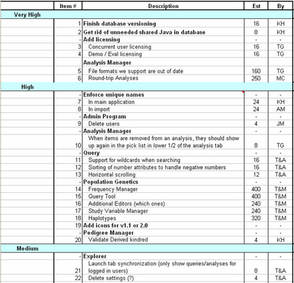
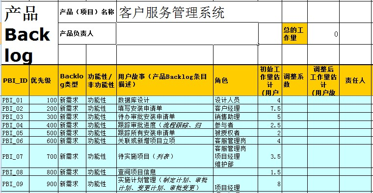

| 工件：Product Backlog 产品订单 |
 |
|
| 角色 | 负责人: | 修改者: |
|---|---|---|
| 任务 | 输入至: | 输出自: |
| 主要描述 | When a project is initiated there is no comprehensive, time-consuming effort to write down all foreseeable tasks or requirements. Typically, a project writes down everything obvious, which is almost always more than enough for a first sprint. The Product Backlog is then allowed to grow and change as more is learned about the product and its customers. During the Sprint Planning Meeting Sprint计划会议 the Product Owner 产品负责人 prioritizes the items in the Product Backlog and describes them to the team. The team then determines which items they can complete during the coming Sprint. The team then moves items from the Product Backlog to the Sprint Backlog 冲刺订单. In doing they expand each Product Backlog item into one or more Sprint Backlog tasks so they can more effectively share work during the Sprint. Conceptually, the team starts at the top of the prioritized Product Backlog list and draws a line after the lowest of the high priority items they feel they can complete. In practice it is not unusual to see a team select, for example, the top five items and then two items from lower on the list but that are associated with the initial five. Product backlog items can be technical tasks ("Refactor the Login class to throw an exception") or more user-centric ("Allow undo on the setup screen"). A very interesting prospect is expressing Scrum backlog items in the form of Extreme Programming's User Stories. The Product Backlog can be maintained in an Excel spreadsheet. An example from a real project is shown below. This Excel spreadsheet shows each product backlog item assigned a general priority (Very High, High, etc.) by the Product Owner. Estimates have been developed by the developers but it is understood that they are very imprecise and are useful only for rough assignments of tasks into the various sprints.  当项目启动时，并不需要将全部可预见的任务或需求全面、费时的写下来。通常情况下,一个项目只要写出一切明显的任务和需求,对第一个冲刺来说已经足够多。 随着对产品和客户的了解，产品订单将逐渐增长并改变。 在Sprint Planning Meeting Sprint计划会议中，Product Owner 产品负责人对产品订单中的订单项进行优先级排序并向Scrum团队描述它们。然后，团队决定他们在即将到来的冲刺（sprint）中能够完成的订单项。接着，团队将选中的订单项从产品订单中移到Sprint Backlog 冲刺订单中。当团队将每一个来自产品订单的订单项分解为冲刺订单中细化的任务时，他们能更有效的协同工作。从概念上理解, 团队在最高优先级的产品订单项和低优先级的订单项之间画一条线，在这线上的，就是他们觉得自己能够完成的任务。在实践中，团队在选择高优先级的一组订单项的同时选择了部分低优先级订单项的情形并不少见，但是这些较低优先级的订单项和所选择的高优先级订单项之间是存在相互关联的。 产品订单项可以是技术任务(如“重构登录类，使其抛出异常”)或更多的用户需求(如“允许撤消屏幕设置”)。 在表达Scrum订单项的形式方法中，使用极限编程中的用户故事（User Story），是一种非常有趣且有前景的方法。 可以使用Excel表格的方式来维护产品订单。如下图所示，是一个来自真实项目的例子。在这个Excel表格中显示了每一个产品订单项以及其由产品负责人所指定的优先级（高、中、低）。 其中，由开发人员估算的工作量是基于对任务并不精确地理解，仅仅用于粗略的将任务分配到各个冲刺（sprints）中。  |
|---|
This program and the accompanying materials are made available under the
Copyright © 1998--2008 Mountain Goat Software. All rights reserved. |